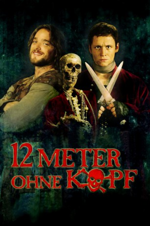

#6558 12 Meter ohne Kopf
 
 IMDB-Wertung: 5.5 / 10
IMDB-Wertung: 5.5 / 10  Metascore: 0
Metascore: 0 
Ostfriesland 1401: Die Ära der gefürchteten Seeräuber und besten Freunde Klaus Störtebeker und Gödeke Michels neigt sich dem Ende. Als endlich mal wieder fette Beute am Horizont auftaucht, wird Störtebeker im Kampf schwer verletzt und die Piraten schmählich geschlagen. Ihre Kogge ist futsch und Störtebeker plagen plötzlich generelle Zweifel am Piratendasein. Ihn zieht es zur schönen Bille an Land, während Michels bei der sexy Friesen-Prinzessin Okka abblitzt. Als auch noch die Mannschaft gegen die glücklosen Co-Kapitäne meutert und alles verloren scheint, entdecken sie an Bord ihrer maroden Schaluppe eine Wunderwaffe. Sie erleben noch einmal eine glorreiche Zeit - bis die Hanse aufrüstet und den Piraten nur eine Wahl bleibt: Ein Leben als Bauer oder der Tod als Pirat!
Jahr: 2009
Dauer: 102 Minuten
FSK: 12
Land: Deutschland Studio: Warner Bros.Tonspuren:
Untertitel: Deutsch,
Auflösung: 1080p (1920x816) Größe: 4997 MB
Genre: Drama, Komödie, Abenteuer, Geschichte, Biographie
Regisseur: Sven Taddicken
Drehbuch: Matthias Pacht
Soundtrack:
Darsteller:
 Ronald Zehrfeld als Klaus Störtebeker
Ronald Zehrfeld als Klaus Störtebeker Matthias Schweighöfer als Gödeke Michels
Matthias Schweighöfer als Gödeke Michels Jana Pallaske als Okka
Jana Pallaske als Okka Devid Striesow als Simon von Utrecht
Devid Striesow als Simon von Utrecht Peter Kurth als Keno Tom Brooke
Peter Kurth als Keno Tom Brooke Alexander Scheer als Hermann Lange
Alexander Scheer als Hermann Lange Milan Peschel als Nikolaus Schocke
Milan Peschel als Nikolaus Schocke- Armin Sauer als Kaufmann der Klaus ersticht
 Godehard Giese als Kaufmann im Fass
Godehard Giese als Kaufmann im Fass- Oliver Bröcker als Lupe
- Hinnerk Schönemann als Keule
- Ferris M.C. als Beule
- Jacob Matschenz als Nolle
- Franziska Wulf als Bille
 Detlev Buck als Waffenhändler
Detlev Buck als Waffenhändler- Achim Reichel als Henker Rosenfeld
- Simon Gosejohann als Fokko Johannson
- Sven Hönig als Landratte in der Kneipe
- Martin Klempnow als Landratte in der Kneipe
- Matthias Klimsa als Wirt
- Jörg Knebel als Wärter
 Falk Rockstroh als Pfeffersack
Falk Rockstroh als Pfeffersack- Thomas Neumann als Pfeffersack
- Knut Berger als Pfeffersack
 Dietrich Brüggemann als Pfeffersack
Dietrich Brüggemann als Pfeffersack- Markus Tomczyk als Ratsknecht
- Tilo Werner als Geistlicher Würdenträger
- Kåre Johannessen als Lehnsherr
- Julian Bartnick als Junge auf der Hinrichtung
- Frederick Brachmann als Junge auf der Hinrichtung
- Enya Laureen Wutzke als Mädchen auf der Hinrichtung
- Leila Moyen-Kuhn als Mädchen auf der Hinrichtung
- Svea Höpner als Kind am Lagerfeuer
- Junis Noreick als Kind am Lagerfeuer
- Sebastian Schaaf als Kind am Lagerfeuer
- Spilwut Spectaculum als Musiker im Bild
Datei: X:\2009(A-F)\12 Meter ohne Kopf (2009, FSK12, 1920x816).mkv seit 10.07.2017
Festplatte: HD 2008(G-Z)-2009(A-F)
 Es gibt insgesamt 91 Filme in der Gruppe '2009(A-F)'
Es gibt insgesamt 91 Filme in der Gruppe '2009(A-F)'